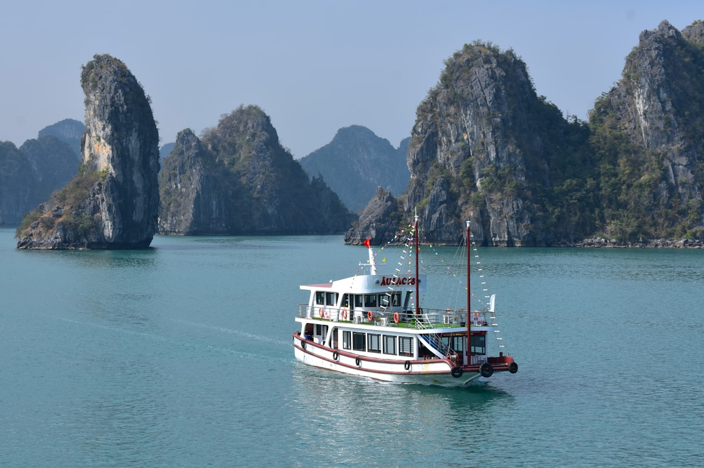
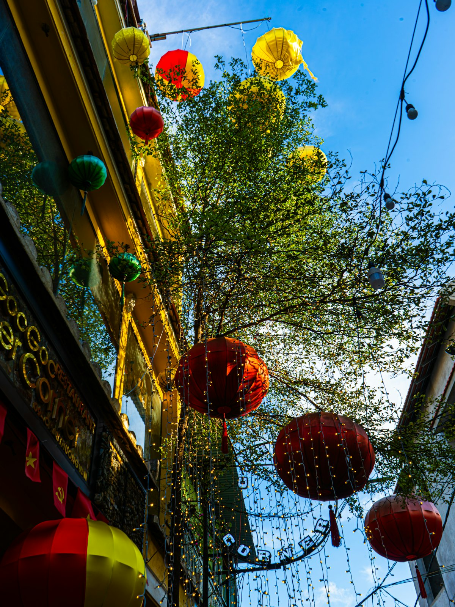
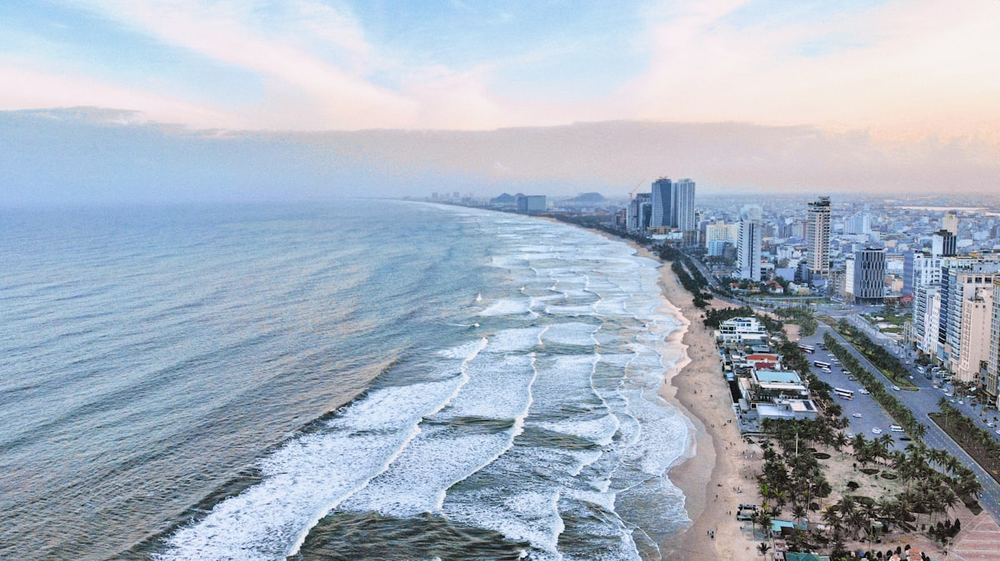
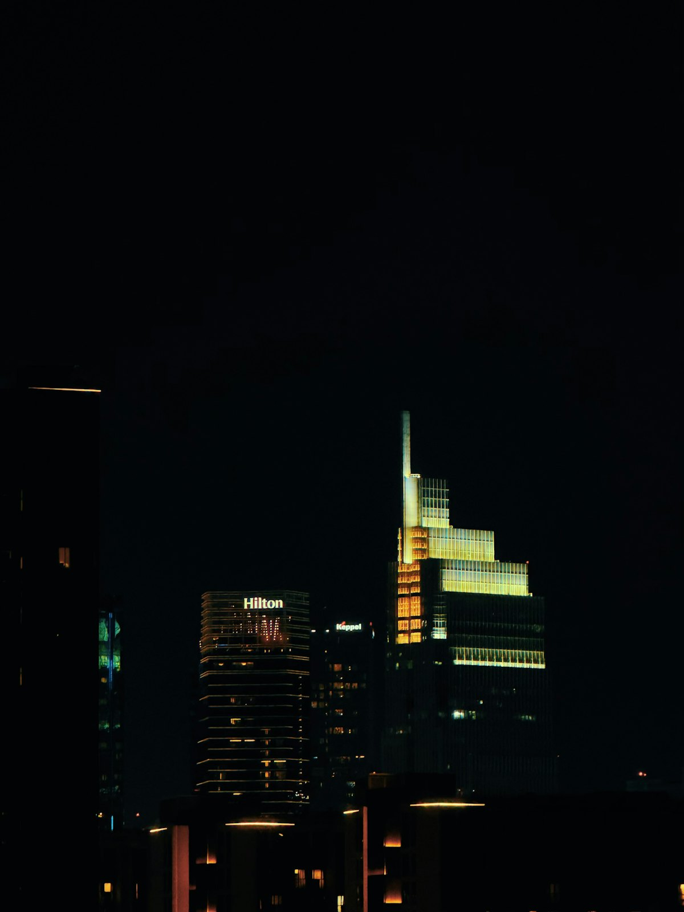
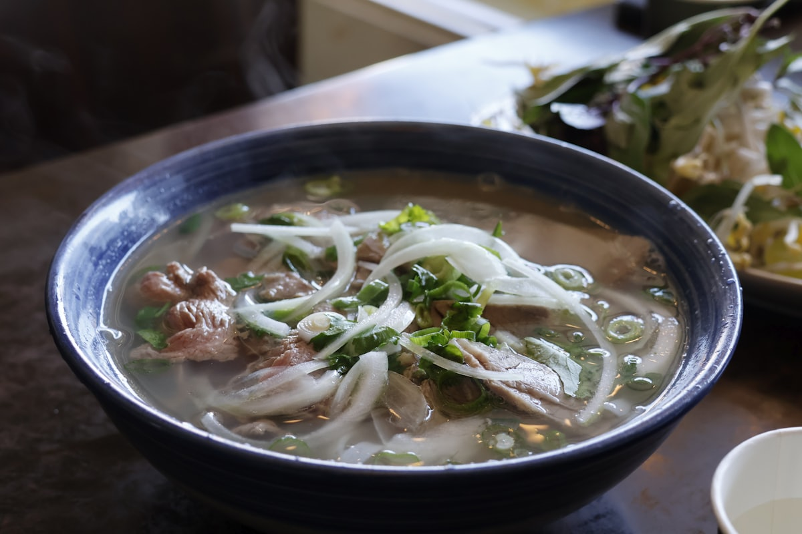
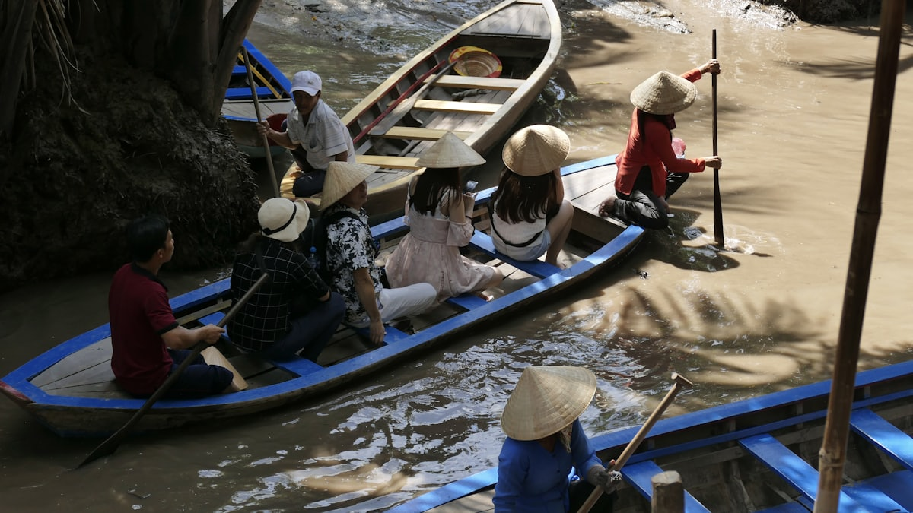
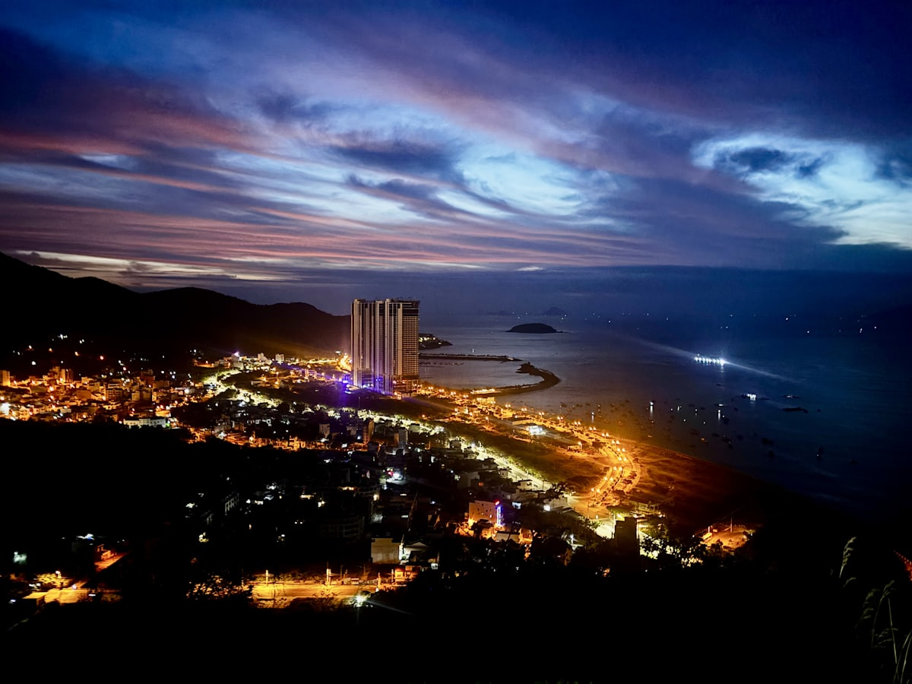

| 事项 | 结论 |
|---|---|
| 事项 | 结论 |
| 签证（最关键） | 中国护照需办电子签 E-visa：单次入境 25 美元、多次 50 美元，最长 90 天有效，线上申请 3–5 个工作日出签，入境口岸免费领取「另纸签证」盖章（中国护照不在护照页盖章） |
| 时差 | 比北京慢 1 小时（UTC+7），落地基本无时差感 |
| 电源插座 | 220V，A/C 型插座（两扁脚/两圆脚），需带转换插头，无需变压 |
| 货币 | 越南盾（VND），10000 VND ≈ 2.9 元人民币；带美元到市区金店/换汇点兑换更划算，街边摊只收现金 |
| 推荐方案 | 河内 3 天（老城+文庙）+ 下龙湾邮轮 2 天 1 晚 + 岘港会安 3 天 + 芽庄 2 天 + 胡志明市 3 天 + 返程 |
| 返程约束 | 胡志明直飞北京约 5h，或经河内/广州转机；旺季（11–2 月）提前 1 个月订 |
| 行程链 | 河内 → 下龙湾 → 岘港 → 会安 → 芽庄 → 胡志明市 |
| 预算（人均） | 经济 7000–10000 ／ 标准 12000–18000 ／ 舒适 25000–38000（人民币） |
| 三件提前事 | ① 办电子签 E-visa ② 订下龙湾 2D1N 邮轮（提前 2–4 周）③ 订国内 3 段机票（河内—岘港—芽庄—胡志明） |
| 季节提醒 | 11 月–次年 4 月旱季最佳；5–10 月雨季；9–11 月台风季避开中部（岘港/会安）沿海 |
| 支付 | 现金越南盾为主 + Visa/Master 卡 + 部分银联/支付宝（商场与大超市） |
以下为 15 天 14 晚的推荐节奏：北越老城与皇城打头，下龙湾邮轮看海上桂林，飞岘港玩美溪海滩与巴拿山金桥，会安看灯笼，芽庄玩海岛与泥浆浴，最后胡志明市以法式风情收尾。每日主景点 ≤2 个，交通以飞机 + 邮轮 + 小巴为主。
| 日期 | 行程 | 过夜地 | 主题 |
|---|---|---|---|
| D1 抵河内 | 北京✈河内（约 4h），入住还剑湖附近，傍晚还剑湖环湖+夜市 | 河内 | 抵达+预热 |
| D2 | 圣约瑟夫大教堂 → 36 行街 → 还剑湖/玉山祠 → 火车街（可选） | 河内 | 老城漫步 |
| D3 | 文庙—国子监 → 巴亭广场/胡志明陵 → 升龙皇城（可选） | 河内 | 千年皇城 |
| D4 | 下龙湾 2D1N 邮轮：惊讶洞 → 皮划艇 → 日落派对 → 夜钓 | 下龙湾 | 海上桂林 |
| D5 | 下龙湾晨景 → 蒂托普岛 → 返港回河内 → 河内✈岘港 | 岘港 | 转场日 |
| D6 | 美溪海滩 → 山茶半岛灵应寺 → 五行山（可选）→ 龙桥夜景 | 岘港 | 海岸日 |
| D7 | 巴拿山一日：金桥（佛手桥）→ 法国村 → 奇幻乐园 | 岘港 | 金桥日 |
| D8 | 会安古城：日本廊桥 → 古城漫游 → 灯笼夜放河灯 | 会安 | 古城之夜 |
| D9 | 岘港✈芽庄：芽庄海滩 → 婆那加占婆塔日落 | 芽庄 | 飞芽庄 |
| D10 | 芽庄四岛游：木岛浮潜 → 渔村午餐 → 竹岛海滩 | 芽庄 | 海岛日 |
| D11 | Thap Ba 泥浆浴 → 芽庄大教堂 → 傍晚✈胡志明市 | 胡志明市 | 泥浆浴+转场 |
| D12 | 中央邮局 → 红教堂 → 统一宫 → 滨城市场 → 金融塔夜景 | 胡志明市 | 法式西贡 |
| D13 | 战争遗迹博物馆 → 范五老街 → 自由安排（咖啡/购物） | 胡志明市 | 西贡往事 |
| D14 | 湄公河三角洲一日：美湄椰子岛 → 小舟水道 → 永长寺 | 胡志明市 | 湄公河日 |
| D15 返程 | 胡志明✈北京（直飞约 5h），入境到家 | — | 收尾 |
以下为 15 天全程的逐小时执行时间线，可当作「当天打开照着走」的清单。标注 ※ 的可选项视体力与天气取舍。
| 时间 | 事项 |
|---|---|
| 09:00–13:00 | 北京✈河内（直飞约 4h，比北京慢 1 小时）。落地内排机场（HAN），入境出示电子签批文，领取另纸签证盖章 |
| 13:00–15:00 | 机场换少量越南盾（汇率一般）、买电话卡（Viettel 约 25 万 VND 无限流量），乘机场快线 86 路/出租车进老城（约 30–45min） |
| 15:30–17:00 | 入住还剑湖附近酒店，休息换夏装 |
| 17:30–21:00 | 还剑湖环湖散步（免费）：龟塔、栖旭桥日落，湖周夜市与 36 行街觅食 |
| 时间 | 事项 |
|---|---|
| 08:30–10:00 | 圣约瑟夫大教堂（免费）：哥特式红砖教堂，周日上午弥撒可旁观 |
| 10:00–12:00 | 36 行街（免费）：按行业划分的古老街区，银器街、灯笼街、药草街，逛骑楼小巷 |
| 12:00–13:00 | 午餐：烤肉米线 Bun Cha（河内名物）或河粉 Pho |
| 13:30–15:00 | 还剑湖 + 玉山祠（玉山祠约 2 万 VND）：红桥湖心岛，湖岸榕树咖啡坐一坐 |
| 15:30–17:30 | 火车街（可选，免费）：咖啡馆贴着铁轨，火车穿巷奇观（时刻约 15:30/19:00，以当日为准） |
| 18:30–21:00 | 升龙水上木偶剧院（约 10 万 VND，可选）或夜市晚餐：烤串、法棍、甘蔗汁 |
| 时间 | 事项 |
|---|---|
| 08:30–11:00 | 文庙—国子监（3 万 VND 约 9 元）：1070 年始建，越南最早的大学，状元碑与「奎文阁」 |
| 11:00–13:00 | 巴亭广场 + 胡志明陵（广场免费）：胡志明陵周一/五闭馆，观瞻需排队并着装得体 |
| 13:00–14:00 | 午餐：河内本地餐馆（鸡肉糯米饭 Xôi Gà） |
| 14:30–16:30 | 升龙皇城（约 3 万 VND，可选）：世界遗产，千年前李朝宫城遗址与旗台 |
| 17:00–18:00 | 老城咖啡馆喝杯蛋咖啡（egg coffee），收拾行李 |
| 21:00 | 早睡，明天一早出发下龙湾 |
| 时间 | 事项 |
|---|---|
| 07:30–08:30 | Limousine 小巴从酒店接人（含在邮轮套票或另购约 25–40 万 VND），2.5–3h 到下龙湾码头 |
| 11:30–12:30 | 登船入住舱房，欢迎饮品，船上午餐（越南菜套餐/自助） |
| 13:30–15:00 | 惊讶洞 Sung Sot：下龙湾最大的钟乳石洞穴，登高俯瞰湾景 |
| 15:30–17:00 | 皮划艇/竹船游卢昂洞水域（视天气与潮位），或甲板发呆 |
| 17:30–19:30 | 日落派对 + 船上烹饪课（越南春卷），晚餐 |
| 20:00–21:30 | 夜钓小管（可选）、甲板看星空，宿船上 |
| 时间 | 事项 |
|---|---|
| 06:00–07:00 | 甲板太极/日出早餐 |
| 08:00–10:00 | 蒂托普岛 Ti Top：登岛 400 级台阶俯瞰「海上桂林」全景，海滩游泳 |
| 10:30–11:30 | 返船早午餐，办理退房 |
| 11:30–13:30 | 邮轮返港，小巴送回河内老城 |
| 15:00–16:20 | 河内✈岘港（约 1h20，提前订 200–400 元） |
| 17:30–19:00 | 入住美溪海滩附近酒店，海滩日落漫步 |
| 19:30–21:00 | 晚餐：美溪海滩海鲜大排档（烤虾、海胆） |
| 时间 | 事项 |
|---|---|
| 08:00–11:00 | 美溪海滩（免费）：全球最美海滩之一，6 公里细白沙，清晨当地人晨泳，可租躺椅晒太阳 |
| 11:30–13:30 | 午餐：海滩海鲜大排档（椒盐濑尿虾、烤鱿鱼） |
| 14:00–16:30 | 山茶半岛灵应寺（免费）：68 米白衣观音像俯瞰岘港湾 |
| 17:00–18:00 | 五行山（约 4 万 VND，可选）：五座大理石山与岩洞佛寺 |
| 19:00–21:00 | 汉江畔晚餐，龙桥夜景（免费）：周五六晚 21:00 有喷火/喷水表演 |
| 时间 | 事项 |
|---|---|
| 08:00 | 酒店出发去巴拿山（距岘港约 40min，可包车/一日游含接送） |
| 09:00–11:30 | 巴拿山太阳世界（外省成人 100 万 VND 约 290 元，含往返缆车）：世界最长跨山缆车，山顶常年 15–20°C |
| 11:30–12:30 | 金桥（佛手桥）：网红打卡，清晨人少光线好 |
| 12:30–13:30 | 午餐：法国村餐厅或自带干粮（园内餐饮偏贵） |
| 13:30–16:30 | 法国村 + 奇幻乐园：仿法式小镇、花园、室内游乐场与 3D/4D/5D 影院 |
| 17:00–18:30 | 缆车下山返回岘港，晚餐：汉江夜游船或市区美食 |
| 时间 | 事项 |
|---|---|
| 08:30 | 岘港乘车到会安（约 45min，Grab/包车约 25–35 万 VND） |
| 09:30–12:00 | 会安古城（通票 12 万 VND 约 35 元，任选 5 个景点）：日本廊桥（来远桥）、福建会馆、中华会馆 |
| 12:00–13:30 | 午餐：会安高楼面 Cao Lầu + 白玫瑰 |
| 13:30–16:00 | 自由逛：裁缝店定制奥黛/西装（约 50–150 美元，当天可取）、灯笼店、河边咖啡 |
| 17:30–19:00 | 古城黄昏，日落时分的会安河景 |
| 19:00–21:00 | 灯笼夜（免费）：满街灯笼亮起，买盏河灯放秋盆河，乘木船夜游（约 15–20 万 VND/船） |
| 时间 | 事项 |
|---|---|
| 08:30–09:40 | 岘港✈芽庄（金兰机场，约 1h10，提前订 200–400 元） |
| 11:00–12:00 | 机场巴士/Grab 进芽庄市区（约 40km，45min–1h） |
| 12:00–13:30 | 入住海滩沿线酒店，午餐：芽庄海鲜粉 |
| 14:00–16:00 | 芽庄海滩（免费）：6 公里海岸线，椰影沙滩，可租躺椅/水上摩托 |
| 16:30–18:00 | 婆那加占婆塔（约 2.2 万 VND 约 6 元）：占婆王朝湿婆塔群，山顶看芽庄湾日落 |
| 19:00–21:00 | 晚餐：芽庄夜市海鲜烧烤（龙虾、扇贝，先问价） |
| 时间 | 事项 |
|---|---|
| 07:30 | 码头集合登船（四岛游套餐约 6–12 美元，含接送+午餐+水果） |
| 09:00–11:30 | 木岛（Hon Mun）附近浮潜：看珊瑚与热带鱼，船上跳水 |
| 11:30–13:00 | 渔村/船上午餐：海鲜、水果、红酒 |
| 13:30–16:00 | 继续跳岛：竹岛/银岛海滩游泳、沙滩排球，或自费潜水体验 |
| 16:30–18:00 | 返航，回酒店休整 |
| 19:00–21:00 | 晚餐：芽庄海岸线大排档（烤龙虾性价比高） |
| 时间 | 事项 |
|---|---|
| 08:30–11:00 | Thap Ba 泥浆浴（约 20–35 万 VND）：天然矿泥浆池泡 20 分钟，再泡温泉/矿泉泳池，皮肤滑溜溜 |
| 11:30–13:00 | 午餐：泥浆浴园区或市区越南菜 |
| 13:30–15:00 | 芽庄大教堂（免费）：法式哥特教堂；或商场补防晒 |
| 16:00–17:05 | 芽庄✈胡志明市（约 1h05，提前订 200–400 元） |
| 18:00–19:30 | 入住第一郡，范五老街晚餐 |
| 20:00–21:30 | 范五老街酒吧街/夜市逛逛（可选） |
| 时间 | 事项 |
|---|---|
| 09:00–11:00 | 西贡中央邮局（免费）：百年法式建筑，写信寄明信片，柱廊很出片 |
| 11:00–12:30 | 西贡圣母大教堂（红教堂）（免费）：红砖双塔，2026 年仍在修缮，外围广场合影即可 |
| 12:30–14:00 | 午餐：第一郡越式餐厅（椰子鸡/春卷） |
| 14:30–17:00 | 统一宫（4 万 VND 约 12 元）：1975 年越战结束地，地堡与直升机坪 |
| 17:30–19:30 | 滨城市场（免费）：1900 年历史老市场，买伴手礼（咖啡、腰果、奥黛） |
| 20:00–22:00 | 金融塔 Bitexco 观景台（约 20 万 VND）或 Landmark 81：西贡夜景 |
| 时间 | 事项 |
|---|---|
| 08:30–11:30 | 战争遗迹博物馆（3 万 VND 约 9 元）：越战历史影像与残骸，沉重但值得，建议先做心理建设 |
| 11:30–13:00 | 午餐：第一郡烤肉饭 Cơm Tấm |
| 13:30–15:30 | 自由安排：玉皇庙（免费）或美术馆，或回酒店泳池休整 |
| 16:00–18:00 | 范五老街（免费）：背包客聚集区，找家咖啡馆或啤酒屋歇脚 |
| 19:00–21:00 | 晚餐：范五老街夜市或第一郡越式火锅 |
| 时间 | 事项 |
|---|---|
| 07:30 | 第一郡酒店出发（一日游约 120–350 元，含接送+午餐+船票，小团更舒服） |
| 09:00–10:30 | 抵达美湄 My Tho：永长寺（越柬中混搭建筑），上船游湄公河 |
| 10:30–12:30 | 小船穿梭水道：椰林水道手摇船，独角兽岛看水果/蜂蜜茶/椰糖作坊 |
| 12:30–13:30 | 岛上午餐（河鲜、水果、春卷） |
| 13:30–15:30 | 椰子岛/Ben Tre：骑行或坐车逛椰子村，看椰壳手工 |
| 16:00–17:30 | 返回胡志明市，酒店休整 |
| 19:00 | 晚餐：第一郡越式河粉+滴漏咖啡收官 |
| 时间 | 事项 |
|---|---|
| 08:00–10:00 | 自由活动：第一郡咖啡馆早咖啡，或滨城市场补货（咖啡粉、腰果、鱼露） |
| 10:30–11:30 | 退房，乘 Grab/机场巴士去新山一机场（Tân Sơn Nhất，约 30–45min） |
| 13:00–18:00 | 胡志明✈北京（直飞约 5h），机上休息 |
| 19:30 | 入境到家，行程结束 |
必去（必去）/ 顺路（顺路）/ 可跳过（可跳过）。

必去
必去
必去
必去
必去
顺路图片为 Unsplash 主题图（下龙湾、还剑湖、会安灯笼、美溪海滩、西贡红教堂、越南河粉咖啡、湄公河、芽庄海湾等均为越南实景），用于页面配图。更多免费/低成本景点：圣约瑟夫大教堂、巴亭广场、灵应寺、芽庄大教堂、滨城市场、范五老街。
点击左侧节点可在地图上定位；点击地图 marker 会高亮对应节点。坐标为 WGS-84 转 GCJ-02 纠偏后标注。
以下为单人、不含购物的估算，人民币计价；出发地基准北京。汇率按 10000 越南盾 ≈ 2.9 元人民币估算。往返机票按淡季直飞 3000–4500 元计，越捷/南航促销时段有 2500 元以下特价。
| 项目 | 经济（7000–10000） | 标准（12000–18000） | 舒适（25000–38000） |
|---|---|---|---|
| 往返机票 | 北京⇄河内/胡志明 特价 2500–3200 | 直飞往返 3500–4500 | 直飞+分段升舱 7000–10000 |
| 住宿（14 晚） | 青旅/民宿 100–200/晚 | 三星/四星 300–500/晚 | 五星海景 900–1500/晚 |
| 境内交通 | 国内 3 段廉航+大巴 700–1000 | 机票+打车 1500–2200 | 全段含行李+包车 3000–4500 |
| 门票与一日游 | 基础景点 400–700 | 含巴拿山/邮轮/湄公河约 1500–2200 | 全含+豪华邮轮+私人团 4000–6000 |
| 餐饮（15 天） | 街边+河粉 1200–1800 | 正常下馆子 2200–3200 | 高端餐厅+海鲜 5000–7000 |
带娃推荐：下龙湾选大船 2D1N（孩子不晕）、岘港美溪海滩留足玩沙时间、芽庄珍珠岛乐园预留 1 天；砍掉巴拿山（园区大、缆车排队久）换成五行山+占婆博物馆；湄公河一日游选小团并预留休息点，孩子易累。越南 12 岁以下儿童多数景点半价，酒店普遍可加床。
9–11 月中部（岘港/会安）易受台风影响，主方案调整为「河内 4 天 + 下龙湾 2D1N + 胡志明 5 天 + 湄公河 + 芽庄缩为 2 晚」；雨季航班延误概率高，段与段之间留弹性、避免当天转机衔接过紧。淡季酒店便宜 30–50%，下龙湾邮轮常有 15–30% 折扣。
| 方式 | 时长 | 参考价 | 备注 |
|---|---|---|---|
| 直飞河内（推荐） | 北京→河内约 4h | 往返 3000–4500 元 | 国航/越南航空，落地内排（HAN） |
| 直飞胡志明 | 北京→胡志明约 5h | 往返 3500–5000 元 | 南航/越捷，落地新山一（SGN） |
| 转机 | 8–14h | 2500–4000 元 | 经广州/香港/上海，便宜但费时 |
| 直飞岘港/芽庄 | 北京→岘港约 3h10 | 往返 4000–6000 元 | 旺季航班少，多数需转机 |
| 区域 | 价格/晚 | 优点 | 短板 |
|---|---|---|---|
| 河内·还剑湖/36 行街 | 经济 100–200 / 标准 300–500 | 老城中心，步行逛景点 | 街道嘈杂、房间偏小 |
| 河内·西湖/巴亭 | 标准 300–600 | 安静、离机场近 | 离老城景点较远 |
| 岘港·美溪海滩 | 经济 150–300 / 标准 350–700 | 海景房、步行到沙滩 | 旺季贵、离市区远 |
| 岘港·汉江畔 | 标准 400–800 | 夜景好、近龙桥夜市 | 去海滩要打车 |
| 会安·古城内 | 标准 300–600 | 灯笼夜景步行可达 | 古城内老房隔音差 |
| 芽庄·海滩沿线 | 经济 120–250 / 标准 300–600 | 海滨度假性价比高 | 离金兰机场 40km |
| 胡志明·第一郡 | 经济 150–300 / 标准 400–700 | 步行中央邮局/红教堂/范五老街 | 车流密集、晚高峰堵 |